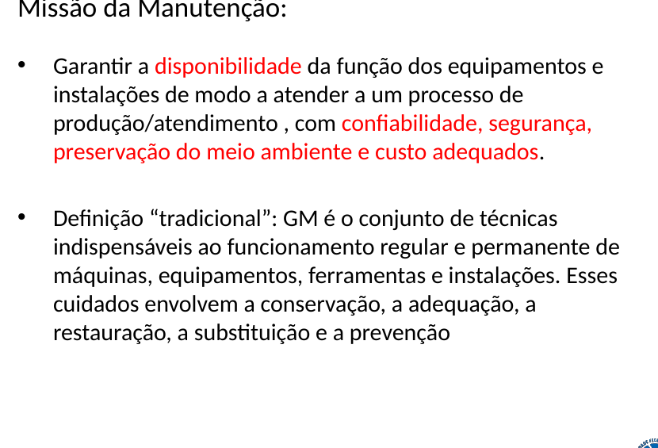
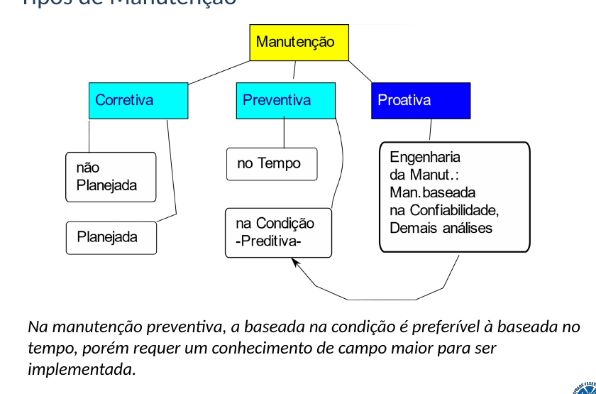
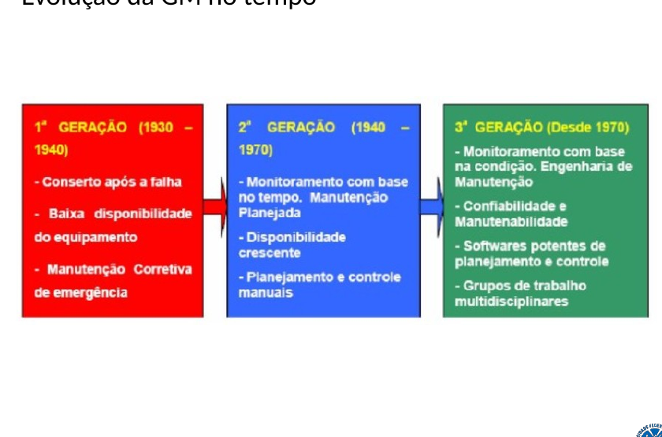
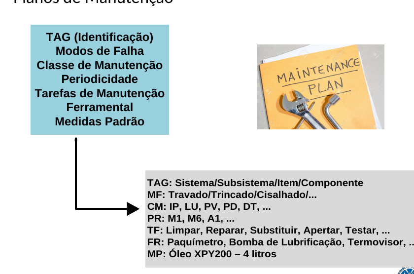
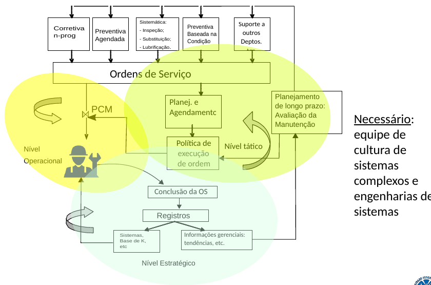
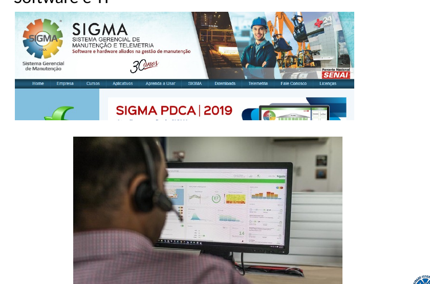
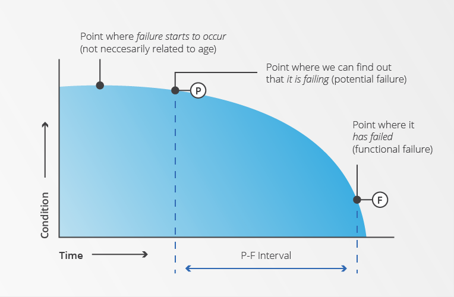
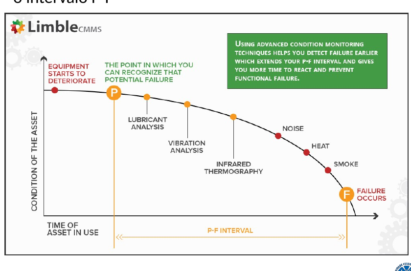
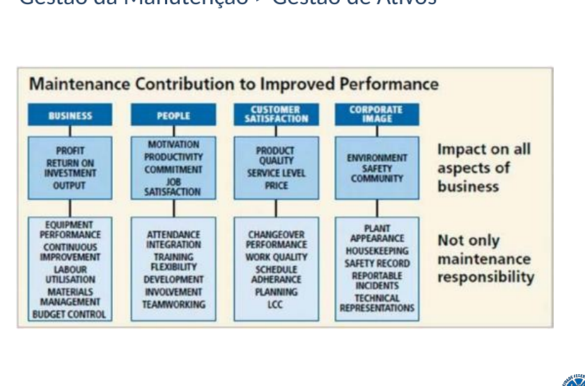
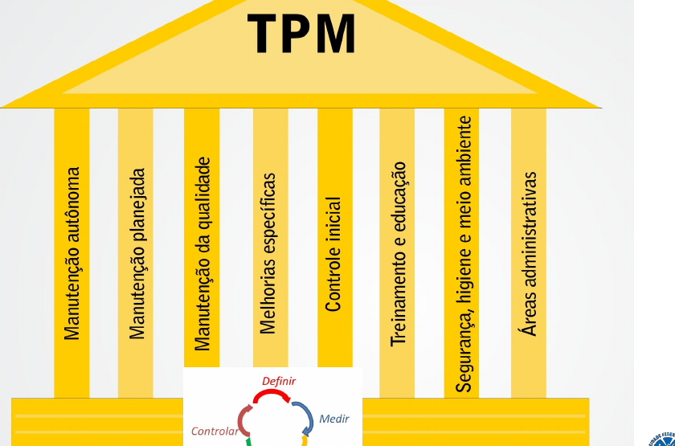

Missão da manutenção: garantir a função
O foco é preservar a capacidade de produzir ou atender, e não apenas recuperar o equipamento após a quebra.
- Garantir disponibilidade dos equipamentos e instalações.
- Atender ao processo com confiabilidade, segurança, preservação ambiental e custo adequado.
- A definição tradicional inclui conservação, adequação, restauração, substituição e prevenção.
- A gestão mais ampla transforma esses cuidados em objetivos, estratégias, responsabilidades, planejamento e controle.

Estratégias: corretiva, preventiva e proativa
A escolha da estratégia depende do comportamento da falha, da criticidade e do conhecimento disponível sobre o ativo.

- Corretiva: ocorre após a deficiência ou falha; pode ser planejada ou não planejada.
- Preventiva baseada no tempo: atua por periodicidade definida.
- Preventiva baseada na condição / preditiva: acompanha sinais do equipamento em operação.
- Proativa / engenharia de manutenção: busca causas, confiabilidade e melhoria do sistema.
Evolução: da quebra ao monitoramento da condição
A história da manutenção mostra uma mudança de lógica: reagir, programar, monitorar e finalmente melhorar o sistema.
- 1ª geração: conserto após a falha e baixa disponibilidade.
- 2ª geração: manutenção planejada e baseada no tempo, com maior controle.
- 3ª geração: monitoramento da condição, confiabilidade, manutenibilidade, software e equipes multidisciplinares.
- A evolução não elimina estratégias anteriores; ela amplia o repertório de decisão.

Do plano ao PCM: organizar antes de executar
Planejamento e Controle da Manutenção conecta identificação do ativo, modos de falha, tarefas, recursos, ordens de serviço e registros.
- Um plano de manutenção inclui TAG, modos de falha, classe, periodicidade, tarefas, ferramental e medidas-padrão.
- Ordens de serviço alimentam a execução e, depois, geram registros para análise.
- O processo integra níveis operacional, tático e estratégico.
- Registros e informações gerenciais permitem avaliar tendências e rever planos.


Confiabilidade, manutenibilidade e indicadores
A confiabilidade reduz a frequência de falhas; a manutenibilidade reduz o esforço e o tempo para restaurar a função.

- Confiabilidade: probabilidade de o item executar sua função satisfatoriamente pelo período desejado, nas condições especificadas.
- Manutenibilidade: facilidade, precisão, segurança e economia na execução de ações de manutenção.
- MTTR: média de tempo necessária para executar um reparo após a falha.
- MTBF: horas de operação divididas pelo número de falhas.
MTBF = horas de operação / nº de falhas
Curva P-F: detectar antes da falha funcional
A curva P-F é o elo entre RCM e manutenção baseada na condição: ela representa a degradação do ativo entre o primeiro sinal detectável e a perda da função.
- P — falha potencial: primeiro ponto em que é possível detectar que uma falha está ocorrendo.
- F — falha funcional: momento em que o ativo já não cumpre sua função como esperado.
- O intervalo P-F é o tempo disponível para detectar, planejar e agir antes da falha funcional.
- O intervalo de inspeção deve ser menor que o intervalo P-F.
- Quanto mais cedo uma técnica detectar sinais confiáveis, maior a janela de decisão.

Tecnologias preditivas: transformar sinais em diagnóstico
Sensores e análises só têm valor quando os sinais são interpretados e incorporados à decisão de manutenção.

Termografia
Detecta variações de temperatura. Aplicações: conexões elétricas, rolamentos, refratários, isolamento e vazamentos.
Análise de óleo
Avalia condição do óleo, contaminação e desgaste interno por partículas e metais.
Ultrassom
Detecta sons de alta frequência: vazamentos, válvulas, steam traps, rolamentos e descargas elétricas.
Vibração
Monitora deslocamento, velocidade e aceleração para identificar desbalanceamento, desalinhamento, folgas e falhas de rolamentos.
Análise de motores
MCSA usa a assinatura da corrente para identificar problemas mecânicos e elétricos.
Tendências de processo
Temperatura, pressão, vazão, consumo e outros indicadores ajudam a enxergar degradação antes da quebra.
Da manutenção à gestão de ativos
O estágio mais maduro integra manutenção, desempenho, risco, custo de ciclo de vida, confiabilidade e objetivos da organização.
- A engenharia de manutenção usa dados para definir intervalos, custos, sobressalentes, dimensionamento de equipes e vida econômica.
- Ferramentas citadas incluem FMEA, RCFA, RCM, FTA, RBI, LCC, FRACAS e análise de mantenabilidade.
- TPM amplia a participação da organização e aproxima operação e manutenção.
- Gestão de ativos desloca o foco do “equipamento isolado” para o valor gerado pelo ativo ao longo do ciclo de vida.


O que precisa ficar
Manutenção existe para garantir a função do ativo.
Estratégia deve combinar criticidade, comportamento da falha e dados.
A Curva P-F define a janela entre detectar e falhar funcionalmente.
Preditiva depende de tecnologia + método + pessoas + registros.
Perguntas de estudo e preparação para avaliação
Questões com barra verde são diretamente respondíveis pelos materiais. As de barra âmbar são integradoras e exigem relacionar mais de um conceito.